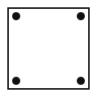
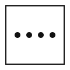
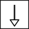
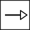

Mock 4 / Reasoning / Answers
Reasoning — Answers
Part II · Q71–100 · 30 marks
View questions without answers
Q.71Select the number that will come next in the series.
0, 6, 24, 60, 120, ?
- 1. 180
- 2. 200
- 3. 216
- 4. 210
Answer: 4 — The terms are n³ − n: 1−1, 8−2, 27−3, 64−4, 125−5, so the next is 216 − 6 = 210.
Q.72Select the number that will come next in the series.
2, 3, 10, 15, 26, 35, ?
- 1. 48
- 2. 50
- 3. 49
- 4. 51
Answer: 2 — The terms are n² + 1 for odd n and n² − 1 for even n: 1+1, 4−1, 9+1, 16−1, 25+1, 36−1, so the next is 49 + 1 = 50.
Q.73Select the number that will come next in the series.
13, 17, 19, 23, 29, 31, ?
- 1. 33
- 2. 37
- 3. 35
- 4. 39
Answer: 2 — These are consecutive primes. After 31 comes 37 (33, 35 and 39 are not prime).
Q.74Select the term that will come next in the series.
AZ, CX, FU, JQ, ?
- 1. OK
- 2. NL
- 3. OL
- 4. PL
Answer: 3 — The first letters move +2, +3, +4, +5: A, C, F, J, O. The second letters move −2, −3, −4, −5: Z, X, U, Q, L.
Q.75Select the term that will come next in the series.
1A, 4D, 9I, 16P, ?
- 1. 25X
- 2. 25Y
- 3. 24Y
- 4. 36Z
Answer: 2 — The numbers are perfect squares, and the letter is at that position in the alphabet: 25 = Y.
Q.76In a certain code, GARDEN is written as OFESBH. How will FLOWER be written in that code?
- 1. SFXPMG
- 2. SFXPMH
- 3. GMPXFS
- 4. RFXPMG
Answer: 1 — The word is reversed and each letter moved one step forward: GARDEN → NEDRAG → OFESBH. So FLOWER → REWOLF → SFXPMG.
Q.77If 2 = 6, 3 = 12, 4 = 20 and 5 = 30, then 7 = ?
- 1. 56
- 2. 42
- 3. 49
- 4. 63
Answer: 1 — Each number n is coded as n × (n + 1): 7 × 8 = 56.
Q.78If P means '+', Q means '−', R means '×' and S means '÷', what is the value of:
18 S 3 R 4 P 6 Q 2
- 1. 30
- 2. 28
- 3. 24
- 4. 26
Answer: 2 — 18 ÷ 3 × 4 + 6 − 2 = 6 × 4 + 6 − 2 = 24 + 4 = 28 (BODMAS: division and multiplication from left to right first).
Q.79Select the option that is related to the third term in the same way as the second term is related to the first term.
Hirakud Dam : Sambalpur :: Rengali Dam : ?
- 1. Dhenkanal
- 2. Keonjhar
- 3. Angul
- 4. Jajpur
Answer: 3 — Hirakud Dam (on the Mahanadi) is in Sambalpur district, and Rengali Dam (on the Brahmani) is in Angul district.
Q.80Select the option that is related to the third number in the same way as the second number is related to the first number.
25 : 37 :: 36 : ?
- 1. 49
- 2. 50
- 3. 48
- 4. 51
Answer: 2 — 25 = 5² → 6² + 1 = 37. Similarly, 36 = 6² → 7² + 1 = 50.
Q.81Select the option that is related to the third term in the same way as the second term is related to the first term.
ACEG : ZXVT :: BDFH : ?
- 1. YWUS
- 2. YXWV
- 3. XVTR
- 4. ZWUS
Answer: 1 — Each letter is replaced by its mirror letter (A↔Z, C↔X, E↔V, G↔T). So B↔Y, D↔W, F↔U, H↔S.
Q.82Select the odd number from the given options.
- 1. 2197
- 2. 3375
- 3. 4900
- 4. 2744
Answer: 3 — 2197 = 13³, 2744 = 14³ and 3375 = 15³ are perfect cubes. 4900 = 70² is a square but not a cube.
Q.83Select the odd one out.
- 1. Gneiss
- 2. Granite
- 3. Schist
- 4. Quartzite
Answer: 2 — Gneiss, schist and quartzite are metamorphic rocks. Granite is an igneous rock.
Q.84Select the odd pair (classical dance – state).
- 1. Odissi – Odisha
- 2. Kuchipudi – Andhra Pradesh
- 3. Mohiniyattam – Kerala
- 4. Sattriya – Manipur
Answer: 4 — Sattriya belongs to Assam. Manipur's classical dance is Manipuri. The other pairs are correct.
Q.85A is 10 m south of B. C is 10 m east of B. How far is C from A, and in which direction?
- 1. 10√2 m, North-West
- 2. 20 m, North-East
- 3. 10 m, East
- 4. 10√2 m, North-East
Answer: 4 — Taking B as the origin, A = (0, −10) and C = (10, 0). C is 10 m north and 10 m east of A: √(10² + 10²) = 10√2 m, towards the north-east.
Q.86A man walks 3 km north, turns right and walks 2 km, turns right again and walks 6 km, then turns left and walks 2 km. How far is he from his starting point, and in which direction?
- 1. 5 km, North-East
- 2. 5 km, South-East
- 3. 4 km, South
- 4. 7 km, South-East
Answer: 2 — Positions: (0,3) → (2,3) → (2,−3) → (4,−3). Distance = √(4² + 3²) = 5 km, towards the south-east.
Q.87In a row of girls, Rita is 12th from the left and Mona is 15th from the right. When they interchange their positions, Rita becomes 20th from the left. How many girls are there in the row?
- 1. 35
- 2. 33
- 3. 34
- 4. 27
Answer: 3 — Rita moves into Mona's place, which is 20th from the left and 15th from the right. Total = 20 + 15 − 1 = 34.
Q.88Five persons L, M, N, O and P live on floors 1 (ground) to 5 of a building, one on each floor. P lives on the top floor. N lives on an even-numbered floor. M lives below N but not on floor 1. O lives on the floor immediately above L. Who lives on floor 3?
- 1. N
- 2. O
- 3. L
- 4. M
Answer: 4 — P is on 5. If N were on 2, M would have to be on 1, which is not allowed, so N is on 4. O must be directly above L, which only works with L on 1 and O on 2. That leaves M on 3.
Q.89Read the statements and decide which of the conclusions logically follow.
Statements: All pens are books. No book is a copy. Some copies are bags.
Conclusions:
I. No pen is a copy.
II. Some bags are not books.
- 1. Only conclusion I follows
- 2. Only conclusion II follows
- 3. Both I and II follow
- 4. Neither I nor II follows
Answer: 3 — Pens are books, and no book is a copy, so no pen is a copy (I). The bags that are copies cannot be books, so some bags are not books (II). Both follow.
Q.90Read the statements and decide which of the conclusions logically follow.
Statements: Some phones are laptops. All laptops are tablets. No tablet is a radio.
Conclusions:
I. All phones are tablets.
II. Some laptops are radios.
- 1. Only conclusion I follows
- 2. Only conclusion II follows
- 3. Both I and II follow
- 4. Neither I nor II follows
Answer: 4 — Only some phones are known to be tablets, so I fails. Laptops are tablets and no tablet is a radio, so no laptop is a radio and II is false.
Q.91Statement: Of the 50 students in a class, 30 like tea and 25 like coffee.
Conclusions:
I. At least 5 students like both tea and coffee.
II. Every student likes at least one of the two drinks.
- 1. Only conclusion I follows
- 2. Only conclusion II follows
- 3. Both I and II follow
- 4. Neither I nor II follows
Answer: 1 — 30 + 25 = 55 exceeds 50, so at least 5 must like both (I). If more than 5 like both, some students like neither, so II need not be true.
Q.92Statement: All 40 students of Class X passed the examination, and 12 of them secured a first division.
Conclusions:
I. 28 students passed without a first division.
II. No student of Class X failed.
- 1. Only conclusion I follows
- 2. Only conclusion II follows
- 3. Both I and II follow
- 4. Neither I nor II follows
Answer: 3 — 40 − 12 = 28 passed without a first division, and 'all passed' means none failed. Both follow.
Q.93A clock shows 4:50. What time will its mirror image appear to show?
- 1. 8:10
- 2. 7:50
- 3. 7:10
- 4. 6:10
Answer: 3 — Mirror time = 11:60 − 4:50 = 7:10.
- 1. 52
- 2. 48
- 3. 50
- 4. 56
Answer: 1 — Third number = (first)² + (second)²: 9 + 25 = 34, 4 + 49 = 53, 16 + 36 = 52.
Q.95How many triangles are there in the given figure?
- 1. 16
- 2. 24
- 3. 30
- 4. 27
Answer: 4 — Upright triangles: 10 (size 1) + 6 (size 2) + 3 (size 3) + 1 (size 4) = 20. Inverted triangles: 6 (size 1) + 1 (size 2) = 7. Total = 27.
Q.96How many squares are there in the given figure?
- 1. 12
- 2. 18
- 3. 24
- 4. 20
Answer: 4 — 1×1: 12, 2×2: 2 × 3 = 6, 3×3: 1 × 2 = 2. Total = 20.
Q.97The given sheet is folded to form a cube. Which number will be on the face opposite the face showing 1?
- 1. 5
- 2. 3
- 3. 4
- 4. 6
Answer: 1 — Fold with 3 as the base. 2 and 4 become opposite side walls, 1 (attached to 2) becomes the north wall, 5 (attached to 4) the south wall, and 6 the top. So 1–5, 2–4 and 3–6 are opposite pairs.
Q.98A square sheet is folded twice as shown (left onto right, then top onto bottom), and a hole is punched close to the inner corner of the folded sheet. How will it look when completely unfolded?
- 1.

- 2.
- 3.

- 4.
Answer: 4 — The punched corner is where both folds meet, which is the centre of the sheet. The four layers give four holes grouped symmetrically around the centre.
Q.99Select the figure that completes the analogy.
- 1.
- 2.
- 3.
- 4.
Answer: 3 — The empty circle becomes a shaded circle, so the empty square becomes a shaded square.
Q.100Select the figure that will come next in the given series.
- 1.
- 2.
- 3.

- 4.

Answer: 1 — The arrow turns 45° clockwise each step (up → up-right → right → down-right), and its head alternates filled, hollow, filled, hollow. So the next is a hollow head pointing down-right.